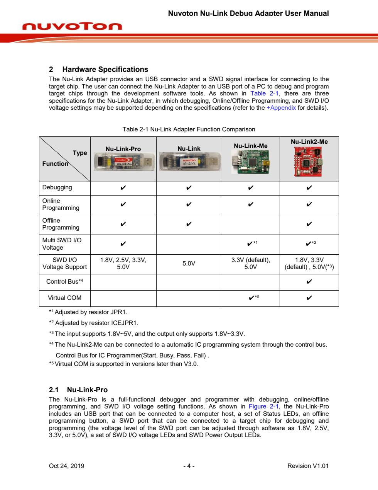

Detected Headings
- 2 Hardware Specifications
- 2.1 Nu-Link-Pro
Detected Figures
- 없음
Detected Tables
- Table 2-1 Nu-Link Adapter Function Comparison
Extracted Lines
- Nuvoton Nu-Link Debug Adapter User Manual
- 2 Hardware Specifications
- The Nu-Link Adapter provides an USB connector and a SWD signal interface for connecting to the
- target chip. The user can connect the Nu-Link Adapter to an USB port of a PC to debug and program
- target chips through the development software tools. As shown in Table 2-1, there are three
- specifications for the Nu-Link Adapter, in which debugging, Online/Offline Programming, and SWD I/O
- voltage settings may be supported depending on the specifications (refer to the +Appendix for details).
- Table 2-1 Nu-Link Adapter Function Comparison
- Nu-Link2-Me
- Nu-Link-Me
- Nu-Link
- Nu-Link-Pro
- Type
- Function
- Debugging ✔ ✔ ✔ ✔
- Online
- ✔ ✔ ✔ ✔
- Programming
- Offline
- ✔ ✔ ✔
- Programming
- Multi SWD I/O
- ✔ ✔*1 ✔*2
- Voltage
- SWD I/O 1.8V, 2.5V, 3.3V, 3.3V (default), 1.8V, 3.3V
- 5.0V
- 5.0V(*3)
- Voltage Support 5.0V 5.0V (default) ,
- ✔
- Bus*4
- Control
- ✔*5 ✔
- Virtual COM
- *1
- Adjusted by resistor JPR1.
- *2
- Adjusted by resistor ICEJPR1.
- *3
- The input supports 1.8V~5V, and the output only supports 1.8V~3.3V.
- *4
- The Nu-Link2-Me can be connected to a automatic IC programming system through the control bus.
- Control Bus for IC Programmer(Start, Busy, Pass, Fail) .
- *5
- Virtual COM is supported in versions later than V3.0.
- 2.1 Nu-Link-Pro
- The Nu-Link-Pro is a full-functional debugger and programmer with debugging, online/offline
- programming, and SWD I/O voltage setting functions. As shown in Figure 2-1, the Nu-Link-Pro
- includes an USB port that can be connected to a computer host, a set of Status LEDs, an offline
- programming button, a SWD port that can be connected to a target chip for debugging and
- programming (the voltage level of the SWD port can be adjusted through software as 1.8V, 2.5V,
- 3.3V, or 5.0V), a set of SWD I/O voltage LEDs and SWD Power Output LEDs.
- Oct 24, 2019 - 4 - Revision V1.01